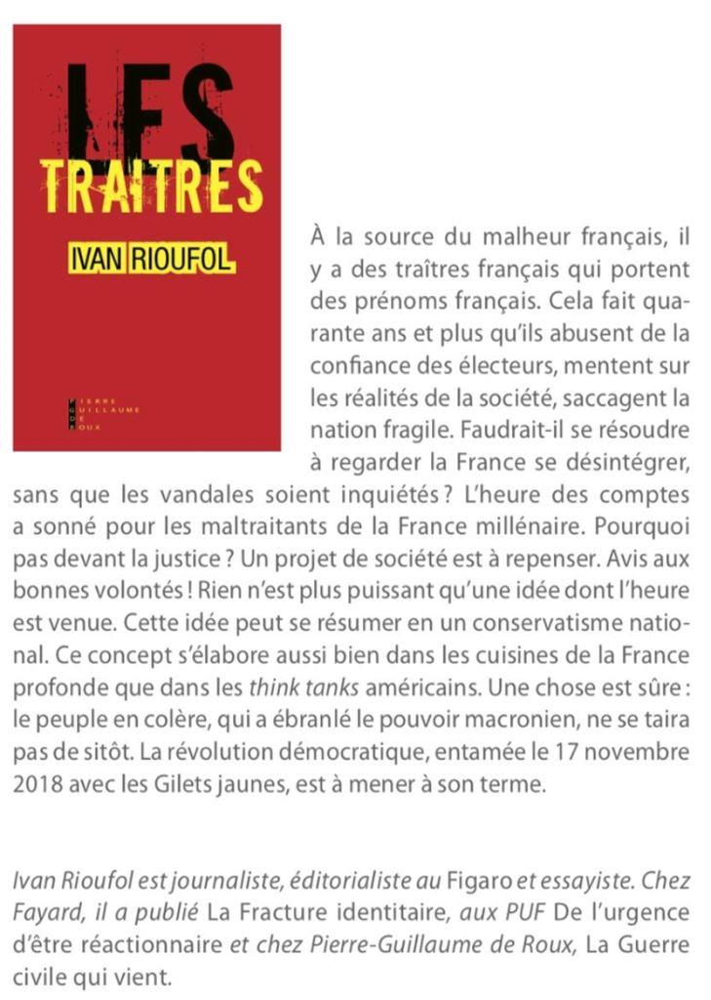

Ivan Rioufol a fait paraître en janvier 2020 aux éditions Pierre Guillaume De Roux, un petit ouvrage qui n’atteint pas deux cent pages et qui s’intitule « Les Traîtres ». La quatrième de couverture parle sans détour :
« À la source du malheur français, il y a des traîtres français qui portent des prénoms français »
On aborde donc l’ouvrage en toute confiance. Effectivement les « traîtres » sont dénoncés, mais souvent les noms de ces « traîtres » ne sont pas cités, par exemple les journalistes du Monde, Gérard Davet et Fabrice Lhomme, qui avaient leurs entrées à l’Elysée du temps de François Hollande, ont écrit un ouvrage « Inch'Allah » en 2018.
Ouvrage dans lequel ils découvrent très tardivement l’islamisation de la France. Ivan Rioufol, note à ce propos :
« les deux compères osent soutenir que ceux qui les avaient précédés depuis plus de vingt ans dans ce diagnostic faisaient de l’idéologie tandis que eux font du journalisme. La morgue du Monde vaut bien celle de la Macronie, soutenue par le quotidien. Qui se ressemble… » p.97
Quoi qu’il en soit, si les noms des journalistes ne figurent pas nommément dans le texte -ils n’ont pas de responsabilité politique- les indications des circonstances ou de lieux sont suffisantes pour identifier les propos ou les actes cités de tel ou tel. À condition que le lecteur prenne ses informations ailleurs que dans les médias mainstream.
Le livre est résolument anti-macronien, le président n’y est pas épargné, les petites phrases anti françaises et anti nationales prononcées régulièrement par le Chef de l’État Français sont reprises et replacées dans leurs contextes, ce qui leur donne encore plus de gravité. Sa façon de gouverner est dénoncée sans ménagement :
« Sa stratégie est celle qui se retrouve dans tous les régimes autoritaires. Elle consiste à déshumaniser les manifestants et à rendre leur cause indéfendable. » p.30
Car, et c’est là une bonne surprise, ces manifestants sont les Gilets Jaunes, qui depuis le 17 novembre 2018 se mobilisent tous les samedis. Le livre comporte une très bonne analyse du mouvement que l’auteur soutient de façon militante (il relate avoir été dans la rue avec eux) et il n’est absolument pas dupe des violences commises le plus souvent par l’ultragauche et imputées aux Gilets Jaunes :
« Le ministère de l’intérieur sait très bien que les débordements sont le fait, pour l’essentiel, d’une extrême gauche anticapitaliste et tiers-mondiste, acquise à la guérilla urbaine et laissée libre dans ses débordements. » p.30
Bien sûr I. Rioufol sait très bien que ce mouvement n’a jamais été homogène et si une majorité d’entre eux, au départ, n’avait pas la coloration politique que prit le mouvement après sa récupération par les militants de La France Insoumise, il ne lui échappe pas que les leaders sont souvent des porte-paroles autoproclamés :
« Il y a eu, en effet, des rustres et des crétins chez les Gilets jaunes et leurs prétendus leaders, adeptes des selfies et des casquettes à l’envers. » p.116
Si l’analyse du mouvement est lucide, il y a peut-être trop d’enthousiasme :
« Mais, à la différence des Peaux-Rouges d’Amérique, qui se sont laissé éradiquer par les nouveaux maîtres des territoires, ceux des ronds-points n’ont aucune intention de se dissoudre. Ils ont le nombre pour eux. » p.53
Le nombre a tendance à fondre au fur et à mesure des samedis qui passent.
Si les « traîtres » sont dénoncés tout au long de l’ouvrage, on trouve aussi au fil des pages de jolies formules et des évidences que l’on a parfois tendance à oublier. Ainsi l’auteur nous remémore en une belle appellation les avantages de l’Internet :
« La nouvelle démocratie transparente des réseaux sociaux » car la « La presse muselée est devenue muselante. » p.95
De belles réflexions également sur le fascisme instauré par les nouvelles victimes et que subissent les français au quotidien :
« Ici revient en mémoire cette réflexion, attribuée à Winston Churchill : « Les fascistes de demain s’appelleront eux-mêmes antifasciste. » Les voici. » p.34
Ou bien :
« Roland Barthes a dit : « Le fascisme ce n’est pas empêcher de dire, c’est d’obliger à dire. » p.69
On sait ce qu’il en est, pour quiconque passe sur les ondes, de l’obligation de rester dans un discours politiquement correct, voire l’obligation d’y entonner la ritournelle de la dénonciation des « discours de haine. » Au sujet des drapeaux algériens qui se sont déversés sur les Champs Elysées pour fêter la victoire de la Coupe d’Afrique des nations, Ivan Rioufol remarque :
« Les derniers drapeaux étrangers portés comme un trophée sur la célèbre avenue étaient ceux de l’occupant nazi. » p.37
Le Pape progressiste et tenant du lobby pro-immigrationiste n’est pas non plus épargné par l’auteur :
« Oui, le Pape François, qui dit ne pas craindre un nouveau schisme, me fait honte. Les catholiques démissionnaires aussi. » p.66
Cela continue de plus belle, en avançant dans l’ouvrage :
« C’est Chirac, premier président dhimmi, qui a dit, en 2003 : « Les racines de la France sont aussi musulmanes que chrétiennes. » p.88
Mais tant d’autres ont dénigré la France dans des chapelets de mensonges et de dénis, Nicolas Sarkozy, alors Président de la République, déclarant en 2008 que le prochain défi que la France doit relever est celui du métissage (p.159)
Si chacun en prend pour son grade, certains, aussi néfastes que les autres, sont épargnés, sans que l’on sache pourquoi :
« Ségolène Royal constate ingénument, le 29 avril 2018, sur RTL : « Aujourd’hui on ne reconnaît plus ce qu’est devenue la France. » Mais elle se garde de désigner les responsables de ce drame. Pour cause : ils se trouvent très largement dans ce camp du bien dont elle est membre honoraire, même si elle n’en est pas la plus dangereuse. » p137
Il ne faut pas s’étonner de cette indulgence envers Ségolène Royal. Dans un précédent ouvrage, Ivan Rioufol , avait déjà flatté Madame Royal :
« Il n’est pas interdit néanmoins de discerner une analogie entre l’égérie du Tea Party, la très à droite et imprévisible Sarah Palin, et la socialiste Madame Sans-Gêne, Ségolène Royal, qui a au moins le mérite de savoir parler aux gens. » De l’urgence d’être réactionnaire, éd. PUF page 170.
Ivan Rioufol n’échappe pas au piège classique qu’a laissé dans l’inconscient français l’esprit bonapartiste et rêve comme beaucoup d’appliquer le geste napoléonien à l’Islam :
« Elle n’est concevable qu’à la condition que les musulmans acceptent de se plier aux normes de la République, comme le firent les juifs en 1806, représentés par le Grand Sanhédrin, à la demande de Napoléon » p167
Cette comparaison zemmourienne, devenue un classique, ne tient pas la route longtemps. Outre une petite erreur de chronologie ; le Grand Sanhédrin fut créé en 1806 et convoqué par Napoléon en 1807. Selon l’historien François Delpech, il y avait en France au moment de la convocation du Grand Sanhédrin 34 900 juifs vivant en France. Ce qui constitue une minorité tout à fait marginale. On ne peut pas demander la même chose à l’Islam en France en 2020. Il y a en France aujourd’hui, au bas mot, plus de 20 millions de personnes concernées par l’Islam. Ce qui n’en fait pas une majorité, mais on ne peut parler de minorité marginale. L’Islam est devenu une composante du pays réel.
En résumé, même si l’auteur décrit avec brio notre société d’aujourd’hui et reconnait, bien sûr, qu’il y a des responsables à cet état de fait, puisque c’est le but du livre, il semblerait que le but soit atteint.
Le lecteur ressent toutefois les hésitations qui existaient déjà dans les précédents ouvrages : une nostalgie du temps où la droite officielle était encore la droite, une droite qui n’avait pas encore diabolisé elle-même les termes de « Patrie » « Nation » « Patriotisme.» Concepts et mots abandonnés par la droite classique et que le Front National a su saisir et développer. Mais même si à la toute dernière page l’auteur écrit :
« Cette mission doit se situer au-delà des querelles stériles qui opposent les uns et les autres à propos du Rassemblement National. La question de sa fréquentation ou non est dépassée. » p178
À trop hésiter à franchir le Rubicon, on finit par se trouver devant la Bérézina…
Partager cette page